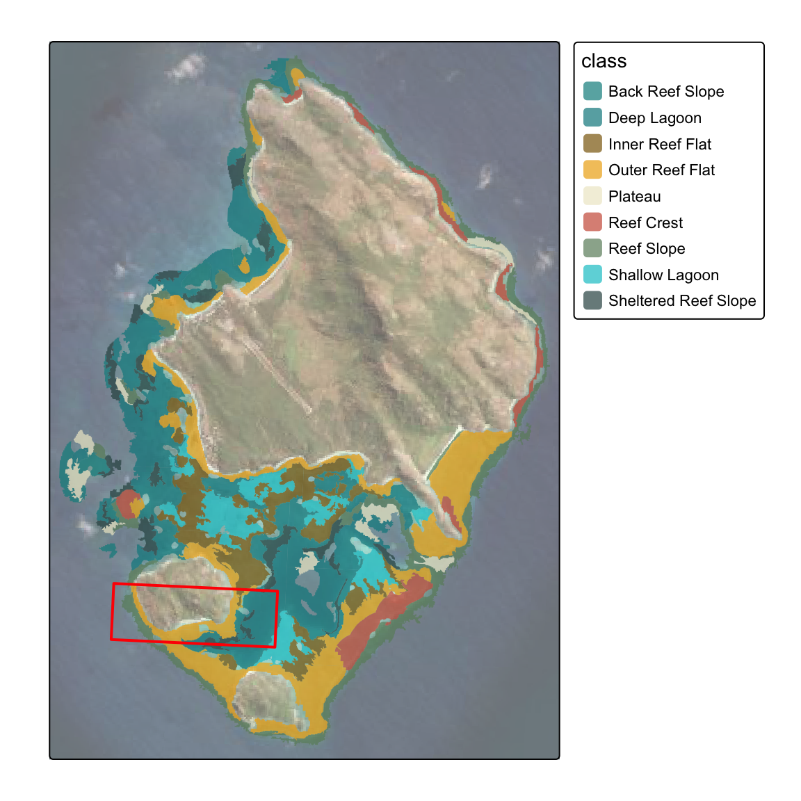
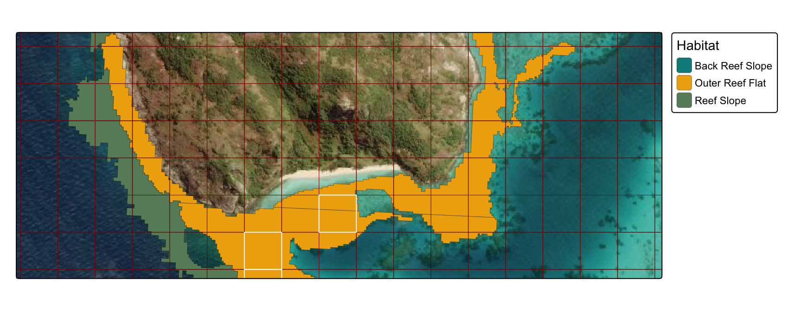
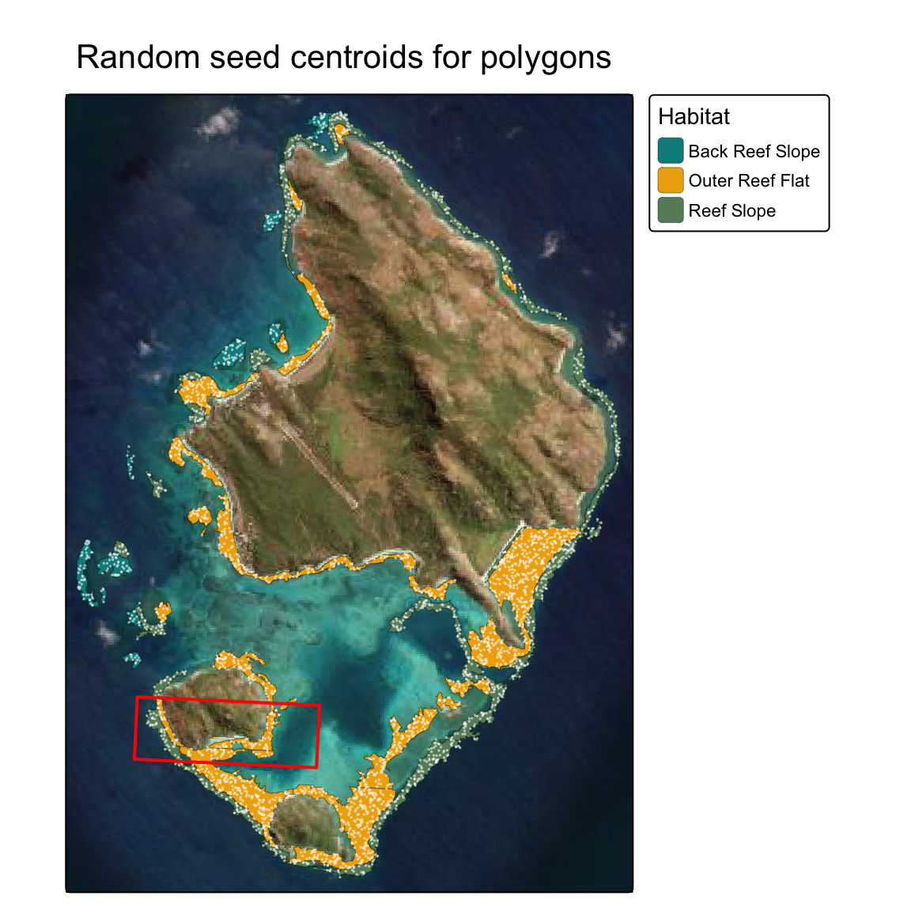
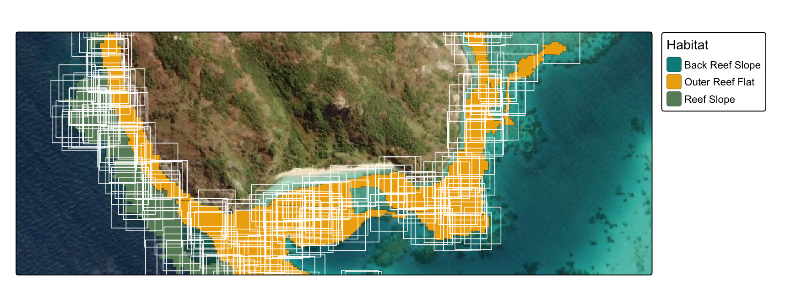
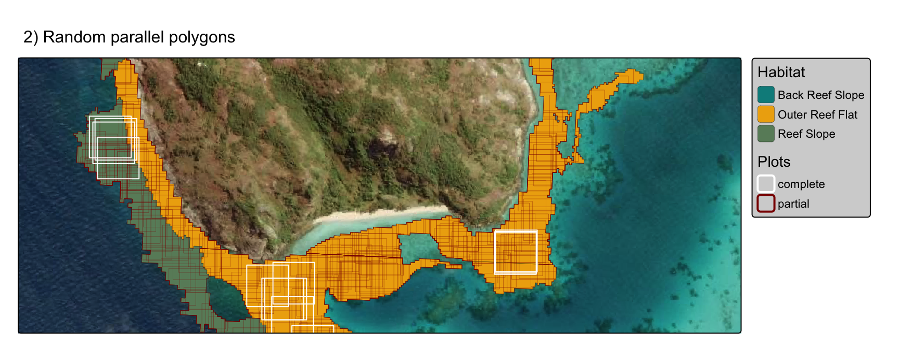
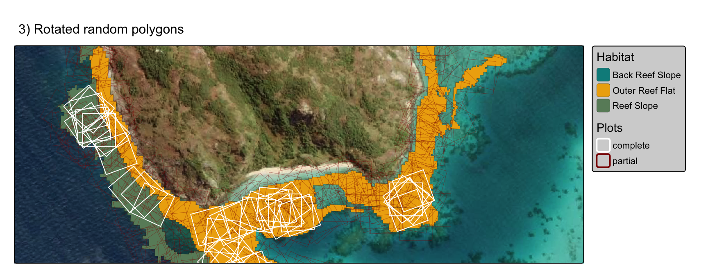
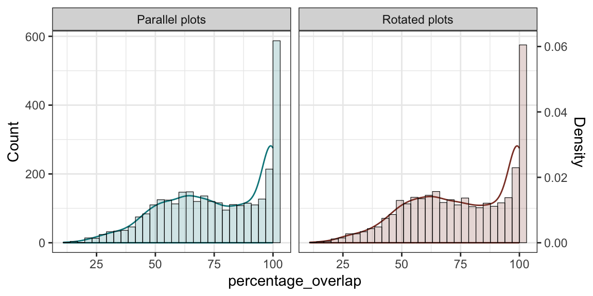
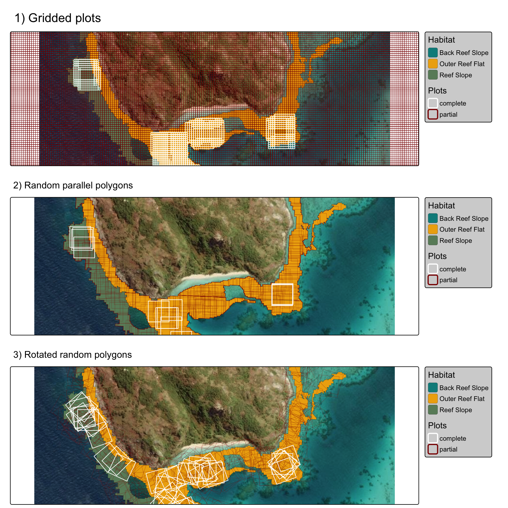

Site selection
George Roff
2024-08-13
Comparisons of various approaches to determine optimal placement of
restoration areas given an underlying habitat shp file
using Lizard Island example from Allen Coral Atlas.
Import habitats
- import
shpfiles, filter and remove polygons less than target plot hectare size (1ha).
Red inset box = subset map used below (note - spatial data in projected coordinate system 20353)
library(tidyverse)
library(sf)
library(future.apply)
library(tictoc)
library(lwgeom)
library(tmap)
set.seed(123)
# Import reef polygons, create union (or returns multiple intersections
geomorphic_seeding <- st_read("/Users/rof011/spatialtools/apps/remove-zones/www/geomorphic.geojson", quiet=TRUE) %>%
mutate(area=as.numeric(st_area(.))) |>
st_transform(20353) |>
filter(area > 10000) |>
mutate(n=round(as.numeric(area)/1000)) |>
st_transform(4326) |>
st_crop(st_bbox(c(xmin = 145.42, xmax = 145.48, ymin = -14.72, ymax = -14.64))) |>
st_transform(20353)
geomorphic_seeding_filtered <- geomorphic_seeding %>%
filter(class %in% c("Outer Reef Flat", "Reef Slope", "Back Reef Slope"))
inset <- st_bbox(c(xmin = 145.44, xmax = 145.455, ymin = -14.697, ymax = -14.692)) |>
st_bbox()
inset_sf <- inset |> st_as_sfc() |> st_set_crs(4326)
habitat_pal <- c("Plateau" = "cornsilk2", "Back Reef Slope" = "darkcyan",
"Reef Slope" = "darkseagreen4", "Sheltered Reef Slope" = "darkslategrey",
"Inner Reef Flat" = "darkgoldenrod4", "Outer Reef Flat" = "darkgoldenrod2",
"Reef Crest" = "coral3", "Shallow Lagoon" = "turquoise3",
"Deep Lagoon" = "turquoise4")
habitat_pal_filtered <- c("Back Reef Slope" = "darkcyan",
"Reef Slope" = "darkseagreen4", "Sheltered Reef Slope" = "darkslategrey",
"Outer Reef Flat" = "darkgoldenrod2")
tmap_mode("plot")
tm_basemap("Esri.WorldImagery", alpha=0.6) +
tm_shape(geomorphic_seeding) +
tm_polygons(fill="class",
lwd=0,
fill_alpha=0.7,
fill.scale=tm_scale_categorical(values=habitat_pal)) +
tm_shape(inset_sf) +
tm_polygons(fill=NA,
col="red",
lwd=2)
1) grid polygons
Determine optimum plot 1ha locations using a regular parallel grid (100m x 100m).
- for simplicity habitat was filtered to restrict polygons to selected four habitat types (“Outer Reef Flat”, “Reef Slope”, “Back Reef Slope”, “Sheltered Reef Slope”)
- white polygons in map below represent 100m x 100m grid cells with 100% coverage of underlying habitat types
- note: code throughout retains 100% coverage in polygons, but set threshold as needed.
geomorphic_seeding_union <- geomorphic_seeding %>%
filter(class %in% c("Outer Reef Flat", "Reef Slope", "Back Reef Slope", "Sheltered Reef Slope")) %>%
st_snap_to_grid(size = 0.01) %>%
st_make_valid() %>%
st_buffer(dist=0.1) %>%
group_by() %>%
summarise(area = sum(area)) %>%
ungroup()
geomorphic_seeding_buffered <- st_buffer(geomorphic_seeding_union, dist = 100)
bbox <- st_bbox(geomorphic_seeding_buffered)
grid <- st_make_grid(bbox, cellsize = c(100, 100), square = TRUE)
grid_sf <- st_sf(geometry = grid)
contains_properly <- st_contains_properly(geomorphic_seeding_union, grid_sf)
indices <- unlist(contains_properly)
indices_numeric <- as.numeric(indices)
grid_sf_whole <- grid_sf[indices_numeric, ]
# Visualization with tmap
tm_basemap("Esri.WorldImagery") +
tm_shape(geomorphic_seeding_filtered, bbox=inset) +
tm_polygons(fill = "class",
fill.legend = tm_legend(title="Habitat", position = tm_pos_out("right", "center")),
fill.scale=tm_scale_categorical(values=habitat_pal_filtered),
lwd = 0.2, col="black", fill_alpha = 1) +
tm_shape(grid_sf, bbox = inset, crs = 20353) +
tm_polygons(fill = NA, col = "darkred", lwd = 0.5) +
tm_shape(grid_sf_whole, bbox = inset, crs = 20353) +
tm_polygons(fill = NA, col = "white", lwd = 1) 
to iterate, use lapply to shift the grid by 10m
increments in lon and lat (or finer
resolution):
library(sf)
library(dplyr)
library(tmap)
# Ensure CRS is set to 20353
crs_value <- 20353
# Define the steps for shifting the grid
step_size <- 10
shifts <- seq(0, 90, by = step_size) # 10m steps up to 90m
bbox <- st_bbox(geomorphic_seeding_union)
# Function to shift grid and filter based on st_contains_properly
generate_shifted_grid <- function(shift_x, shift_y) {
# Shift the bounding box
shifted_bbox <- bbox
shifted_bbox['xmin'] <- bbox['xmin'] + shift_x
shifted_bbox['xmax'] <- bbox['xmax'] + shift_x
shifted_bbox['ymin'] <- bbox['ymin'] + shift_y
shifted_bbox['ymax'] <- bbox['ymax'] + shift_y
# Ensure that the shifted_bbox values are valid
if (any(is.na(shifted_bbox))) {
stop("Shifted bounding box contains NA values, check your shifts.")
}
# Generate the grid and set the CRS
grid <- st_make_grid(shifted_bbox, cellsize = c(100, 100), square = TRUE)
grid_sf <- st_sf(geometry = grid, crs = crs_value)
# Check if grid cells are fully within the geomorphic_seeding_union
contains_properly <- st_contains_properly(geomorphic_seeding_union, grid_sf)
indices <- unlist(contains_properly)
# Add a color column based on whether the grid cells are fully contained
grid_sf <- grid_sf %>%
mutate(color = ifelse(row_number() %in% indices, "complete", "partial"))
return(grid_sf)
}
# Apply the function over all combinations of shifts in x and y directions
grids_list <- lapply(shifts, function(x_shift) {
lapply(shifts, function(y_shift) {
generate_shifted_grid(x_shift, y_shift)
})
})
# Flatten the nested list of sf objects into a single list
flattened_list <- do.call(c, grids_list)
# Combine all sf objects into a single sf object
grids_list <- do.call(rbind, flattened_list)
gridplots <- tm_basemap("Esri.WorldImagery") +
tm_shape(geomorphic_seeding_filtered, bbox=inset) +
tm_polygons(fill = "class",
fill.legend = tm_legend(title="Habitat", bg.color="lightgrey", position = tm_pos_out("right", "center")),
fill.scale=tm_scale_categorical(values=habitat_pal_filtered),
lwd = 0.2, col="black", fill_alpha = 1) +
tm_shape(grids_list, bbox = inset, crs = 20353) +
tm_polygons(fill = NA, col = "color", lwd = "color",
col.legend = tm_legend(title="Plots", bg.color="lightgrey", position = tm_pos_out("right", "center")),
col.scale=tm_scale_categorical(values=c("white", "darkred")),
lwd.scale=tm_scale_categorical(values=c(1, 0.1)),
lwd.legend=tm_legend_hide()
) +
tm_title("1) Gridded plots")
gridplots
2) parallel random polygons
Determine optimum plot 1ha locations using polygons with randomly seeded centroids, keep polygons that are 100% overlap with habitat type.
The number of seed points (centroids for polygons) is determined by the area of each polygon (i.e. larger polygons = more points)
set.seed(101)
#remotes::install_github("r-tmap/tmap.deckgl")
# lapply sampling process
seeded_points <- st_sf(do.call(rbind, lapply(seq_len(nrow(geomorphic_seeding_filtered)), function(i) {
polygon <- geomorphic_seeding_filtered[i, ]
points <- st_sample(polygon, size = polygon$n, type = "random")
st_sf(class = polygon$class, geometry = points)
}))) |> st_transform(20353)
tm_basemap("Esri.WorldImagery") +
tm_shape(geomorphic_seeding_filtered) +
tm_polygons(fill = "class",
fill.legend = tm_legend(title="Habitat", position = tm_pos_out("right", "center")),
fill.scale=tm_scale_categorical(values=habitat_pal_filtered),
lwd = 0.2, col="black", fill_alpha = 1) +
tm_shape(seeded_points) +
tm_dots(size=0.05,
fill="white",
fill_alpha=0.5) +
tm_shape(inset_sf) +
tm_polygons(fill=NA,
col="red",
lwd=2) +
tm_title("Random seed centroids for polygons")
Generate 100 x 100m polygons around each point:
# Define the width and length of the rectangle
width <- 100 # Example width (in the same units as your CRS)
length <- 100 # Example length (in the same units as your CRS)
# Use lapply to create the buffered polygons
buffered_polygons <- lapply(seq_len(nrow(seeded_points)), function(i) {
# Extract the coordinates of the current point
x <- sf::st_coordinates(seeded_points)[i, 1]
y <- sf::st_coordinates(seeded_points)[i, 2]
# Set parameters for the rectangle around the point
x_min <- x - (width / 2)
x_max <- x + (width / 2)
y_min <- y - (length / 2)
y_max <- y + (length / 2)
# Create the rectangular polygon
polygon <- sf::st_polygon(list(rbind(
c(x_min, y_min),
c(x_min, y_max),
c(x_max, y_max),
c(x_max, y_min),
c(x_min, y_min)
)))
return(polygon)
})
# Combine the results into a single sf object
buffered_polygons_sf <- sf::st_sfc(buffered_polygons, crs = sf::st_crs(seeded_points)) |> st_as_sf()
tm_basemap("Esri.WorldImagery") +
tm_shape(geomorphic_seeding_filtered, bbox=inset) +
tm_polygons(fill = "class",
fill.legend = tm_legend(title="Habitat", position = tm_pos_out("right", "center")),
fill.scale=tm_scale_categorical(values=habitat_pal_filtered),
lwd = 0.2, col="black", fill_alpha = 1) +
tm_shape(buffered_polygons_sf,
bbox=inset,
crs=20353) +
tm_polygons(fill=NA,
col="white",
lwd=0.8) 
Make a function to apply plots across points using
lapply and retain only polygons with 100% overlap with reef
habitats as with gridded approach and time using
tictoc:
library(tictoc)
tic()
# lapply sampling process
seeded_points <- st_sf(do.call(rbind, lapply(seq_len(nrow(geomorphic_seeding_filtered)), function(i) {
polygon <- geomorphic_seeding_filtered[i, ]
points <- st_sample(polygon, size = polygon$n, type = "random")
st_sf(class = polygon$class, geometry = points)
}))) |> st_transform(20353)
# Define the width and length of the rectangle
width <- 100
length <- 100
# Use lapply to create the buffered polygons
buffered_polygons_filtered <- lapply(seq_len(nrow(seeded_points)), function(i) {
# Extract the coordinates of the current point
x <- sf::st_coordinates(seeded_points)[i, 1]
y <- sf::st_coordinates(seeded_points)[i, 2]
# Set parameters for the rectangle around the point
x_min <- x - (width / 2)
x_max <- x + (width / 2)
y_min <- y - (length / 2)
y_max <- y + (length / 2)
# Create the rectangular polygon
polygon <- sf::st_polygon(list(rbind(
c(x_min, y_min),
c(x_min, y_max),
c(x_max, y_max),
c(x_max, y_min),
c(x_min, y_min)
)))
return(polygon)
})
# Combine the results into a single sf object
buffered_polygons_filtered_sf <- sf::st_sfc(buffered_polygons_filtered, crs = sf::st_crs(seeded_points)) |> st_as_sf()
# Intersect the plots with the reef polygons, calculate overlap
intersections_filtered <- st_intersection(buffered_polygons_filtered_sf, st_union(geomorphic_seeding_filtered)) %>%
mutate(intersection_area = st_area(.)) %>%
mutate(percentage_overlap = (as.numeric(intersection_area)/10000) * 100) |>
mutate(overlap=ifelse(percentage_overlap==100, "complete", "partial"))
toc()## 4.724 sec elapsedtmap_mode("plot")
polyplots <- tm_basemap("Esri.WorldImagery") +
tm_shape(geomorphic_seeding_filtered, bbox=inset) +
tm_polygons(fill = "class",
fill.legend = tm_legend(title="Habitat", bg.color="lightgrey", position = tm_pos_out("right", "center")),
fill.scale=tm_scale_categorical(values=habitat_pal_filtered),
lwd = 0.2, col="black", fill_alpha = 1) +
tm_shape(intersections_filtered,
bbox=inset) +
tm_polygons(fill = NA, col = "overlap", lwd = "overlap",
col.legend = tm_legend(title="Plots", bg.color="lightgrey", position = tm_pos_out("right", "center")),
col.scale=tm_scale_categorical(values=c("white", "darkred")),
lwd.scale=tm_scale_categorical(values=c(1, 0.2)),
lwd.legend=tm_legend_hide()
) +
tm_title("2) Random parallel polygons", size=1)
polyplots
Use future.lapply to speed things up with larger
datasets (note: multisession below, use
multicoreon base R to obtain optimal results)
options(future.rng.onMisuse = "ignore")
library(future.apply)
tic()
# Set up parallel processing plan
plan(multisession, workers = availableCores())
# Parallel lapply sampling process using future_lapply
seeded_points_list <- future_lapply(future.seed=NULL, seq_len(nrow(geomorphic_seeding)), function(i) {
polygon <- geomorphic_seeding[i, ]
points <- st_sample(polygon, size = polygon$n, type = "random")
st_sf(class = polygon$class, geometry = points)
})
# Combine the list into a single sf object
seeded_points <- do.call(rbind, seeded_points_list) |> st_sf() |> st_transform(20353)
# Define the width and length of the rectangle
width <- 100 # Example width (in the same units as your CRS)
length <- 100 # Example length (in the same units as your CRS)
# Use future_lapply to create the buffered polygons
buffered_polygons_list <- future_lapply(seq_len(nrow(seeded_points)), function(i) {
# Extract the coordinates of the current point
x <- sf::st_coordinates(seeded_points)[i, 1]
y <- sf::st_coordinates(seeded_points)[i, 2]
# Set parameters for the rectangle around the point
x_min <- x - (width / 2)
x_max <- x + (width / 2)
y_min <- y - (length / 2)
y_max <- y + (length / 2)
# Create the rectangular polygon
polygon <- sf::st_polygon(list(rbind(
c(x_min, y_min),
c(x_min, y_max),
c(x_max, y_max),
c(x_max, y_min),
c(x_min, y_min)
)))
return(polygon)
})
# Combine the results into a single sf object
buffered_polygons_sf <- sf::st_sfc(buffered_polygons_list, crs = sf::st_crs(seeded_points)) |> st_as_sf()
# Intersect the plots with the reef polygons, calculate overlap
intersections <- st_intersection(buffered_polygons_sf, st_union(geomorphic_seeding)) %>%
mutate(intersection_area = st_area(.)) %>%
mutate(percentage_overlap = (as.numeric(intersection_area) / 10000) * 100)
# Reset the plan to sequential processing after completion (optional)
plan(sequential)
toc()3) rotated random polygons
Determine optimum plot 1ha locations using polygons with randomly seeded centroids
rotate polygons by a random 5° compass bearing between 0-355°.
retain polygons that are 100% overlap with habitat type.
use
future.lapplyto multisession and time usingtictoc
library(future.apply)
library(sf)
library(spatialEco)
tic()
# Set up parallel processing plan
plan(multisession, workers = availableCores())
# Use future_lapply to create the buffered polygons with random rotations
buffered_polygons_list_rotated <- future_lapply(seq_len(nrow(seeded_points)), function(i) {
# Extract the coordinates of the current point
x <- sf::st_coordinates(seeded_points)[i, 1]
y <- sf::st_coordinates(seeded_points)[i, 2]
# Set parameters for the rectangle around the point
x_min <- x - (width / 2)
x_max <- x + (width / 2)
y_min <- y - (length / 2)
y_max <- y + (length / 2)
# Create the rectangular polygon
polygon <- sf::st_polygon(list(rbind(
c(x_min, y_min),
c(x_min, y_max),
c(x_max, y_max),
c(x_max, y_min),
c(x_min, y_min)
)))
# Convert to sf object for rotation
polygon_sf <- st_sf(geometry = st_sfc(polygon, crs = st_crs(seeded_points)))
# Select a random rotation angle from the sequence
angle <- sample(seq(0, 355, 5), 1)
# Rotate the polygon by the random angle using spatialEco::rotate.polygon
rotated_polygon <- spatialEco::rotate.polygon(polygon_sf, angle = angle, anchor = "center") |> mutate(id=i)
# Extract the geometry from the rotated sf object
return(rotated_polygon)
})
buffered_polygons_rotated <- do.call(rbind,buffered_polygons_list_rotated) |> st_set_crs(20353)
buffered_polygons_rotated_intersect <- st_intersection(buffered_polygons_rotated, st_union(geomorphic_seeding_filtered)) %>%
mutate(intersection_area = st_area(.)) |> as.data.frame() |> select(-geometry)
intersections_rotated <- buffered_polygons_rotated |>
left_join(buffered_polygons_rotated_intersect, by="id") |>
mutate(percentage_overlap = (as.numeric(intersection_area) / 10000) * 100) |>
mutate(overlap=ifelse(percentage_overlap>98, "complete", "partial"))
# Reset the plan to sequential processing after completion (optional)
plan(sequential)
toc()## 9.133 sec elapsedinset <- st_bbox(c(xmin = 145.44, xmax = 145.455, ymin = -14.697, ymax = -14.692)) |>
st_bbox()
tmap_mode("plot")
rotatedplots <- tm_basemap("Esri.WorldImagery") +
tm_shape(geomorphic_seeding_filtered, bbox=inset) +
tm_polygons(fill = "class",
fill.legend = tm_legend(title="Habitat", bg.color="lightgrey", position = tm_pos_out("right", "center")),
fill.scale=tm_scale_categorical(values=habitat_pal_filtered),
lwd = 0.2, col="black", fill_alpha = 1) +
tm_shape(intersections_rotated,
bbox=inset) +
tm_polygons(fill = NA, col = "overlap", lwd = "overlap",
col.legend = tm_legend(title="Plots", bg.color="lightgrey", position = tm_pos_out("right", "center")),
col.scale=tm_scale_categorical(values=c("white", "darkred")),
lwd.scale=tm_scale_categorical(values=c(1, 0.2)),
lwd.legend=tm_legend_hide()
) +
tm_title("3) Rotated random polygons", size=1)
rotatedplots
Outputs
Summary points below:
i) rotating polygons doesn’t increase total plot numbers
Broadly similar outputs for percent overlap between the
paralell and rotated plot aproaches:
combined <- rbind(intersections_filtered |> mutate(type="Parallel plots") |> as.data.frame() |> select(intersection_area, type),
buffered_polygons_rotated_intersect |> mutate(type="Rotated plots") |> as.data.frame() |> select(intersection_area, type)
)
combined <- combined |> mutate(percentage_overlap=as.numeric(intersection_area)/10000*100)
combined_data <- as.data.frame(combined)
hist_data <- ggplot_build(ggplot(combined_data) + geom_histogram(aes(x = percentage_overlap, fill = type)))$data[[1]]
scale_factor <- max(hist_data$count) / max(hist_data$density)
ggplot() +
theme_bw() +
facet_wrap(~type) +
stat_density(data = combined_data, aes(x = percentage_overlap, y = ..density.. * scale_factor, col = type),
alpha = 0.2, linewidth = 0.5, show.legend=FALSE, fill=NA) +
geom_histogram(data = combined_data, aes(x = percentage_overlap, y = ..count.., fill = type),
alpha = 0.2, color = "black", linewidth = 0.2, show.legend=FALSE) +
scale_y_continuous(
name = "Count",
sec.axis = sec_axis(~ . / scale_factor, name = "Density")
) +
scale_fill_manual(values=c("turquoise4", "coral4")) +
scale_color_manual(values=c("turquoise4", "coral4"))
ii) rotating plots improves fit in narrow polygons
The rotated plot method appears to improve fit in narrow irregular polygons over both the regular gridded plot and random plot approaches:
tmap_arrange(gridplots, polyplots, rotatedplots, ncol=1)
iii) efficiency over large areas
To be explored: sf is very slow for large computations.
Opt for shapely or geopandas and optimise:
from shapely.geometry import Polygon
from shapely.affinity import rotateimport geopandas as gpd
from shapely.affinity import rotate